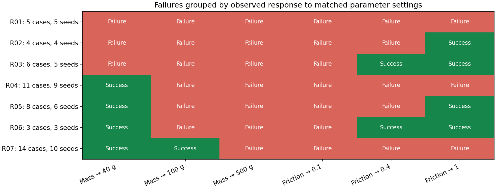
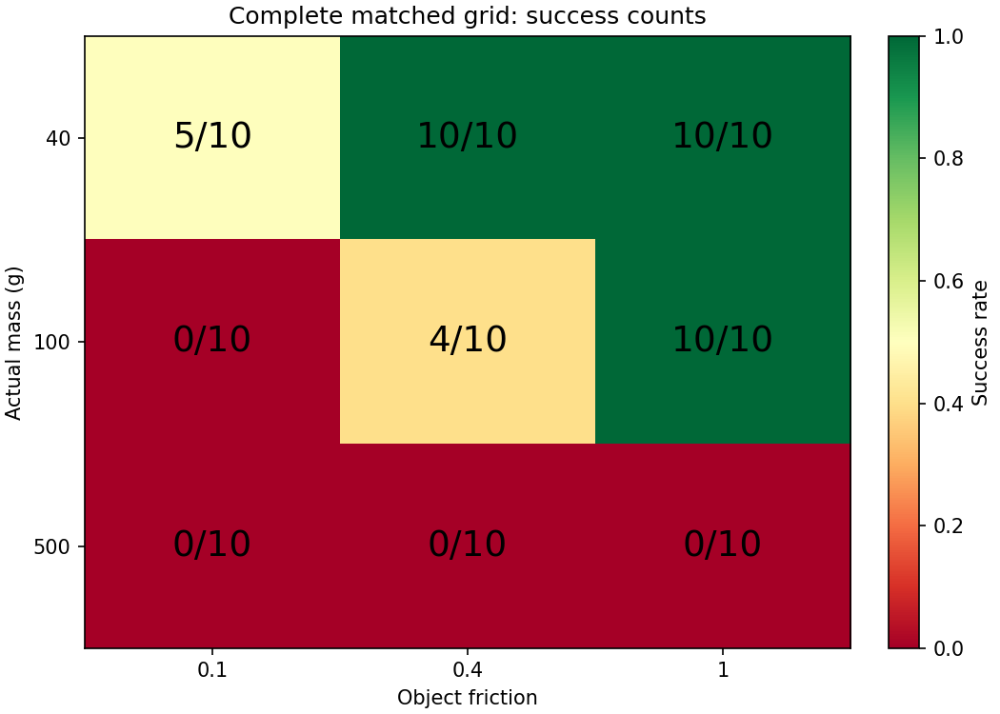

# Intervention-response test 90 recorded attempts across 9 mass/friction settings and 10 seeds. 51 failed cases form 7 observed response profiles. No failure names were supplied: each group contains failed cases with the same recorded target-setting outcomes. Changing mass keeps friction fixed; changing friction keeps mass fixed. Joint settings are checked separately. No-change targets are marked as controls in the evidence CSV. No missing trial is assumed to have failed. 5 failed cases had no successful single-variable target among these levels, but had a successful tested joint change. This is a bounded experimental result, not a universal claim that both parameters must change. These are physical interventions on the simulator, not grip-command changes or updates to an estimated policy input. All selected trials come from the custom-policy dataset, not the stock policy. Different response profiles do not prove distinct physical mechanisms; equal profiles need not mean equal causes. Repeatability across these ten seeds is descriptive. The next test is finer intervention levels and additional held-out starts.
| Group | Failed cases | Distinct seeds | Response vector |
|---|---|---|---|
| R01 | 5 | 5 | 000000 |
| R02 | 4 | 4 | 000001 |
| R03 | 6 | 5 | 000011 |
| R04 | 11 | 9 | 100000 |
| R05 | 8 | 6 | 100001 |
| R06 | 3 | 3 | 100011 |
| R07 | 14 | 10 | 110000 |
| Observed route | Failed cases |
|---|---|
| friction change only among tested single changes | 10 |
| either variable alone | 11 |
| joint change only within tested grid | 5 |
| mass change only among tested single changes | 25 |
These counts describe alternatives for the 51 failed source cases; target trials are reused and are not independent new experiments.
Green = recorded success; red = recorded failure. Columns are shared target settings, not newly simulated attempts.


Each failed case and its successful alternatives · Exact matched-trial evidence · Summary and limits